Innsbruck
Ultra Minimal
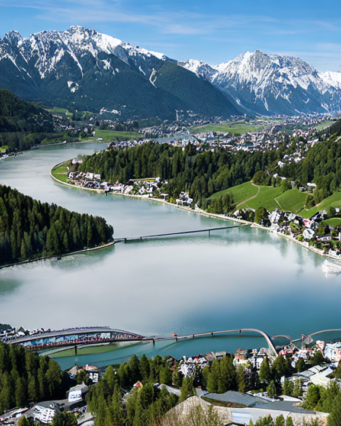
A contemporary alpine civic identity for Innsbruck, Austria. Not a classical coat of arms; instead a modern brand mark, abstract symbol, premium logo design, inspired by mountain city life, river crossing, and urban-alpine energy, no medieval ornament, no lions, no towers, no scrollwork, no text, no watermark. Style direction: ultra-minimal flat logo, strong geometry, two-tone palette, generous negative space, Swiss-style precision, crisp and distinctive.
Abstract Mountain
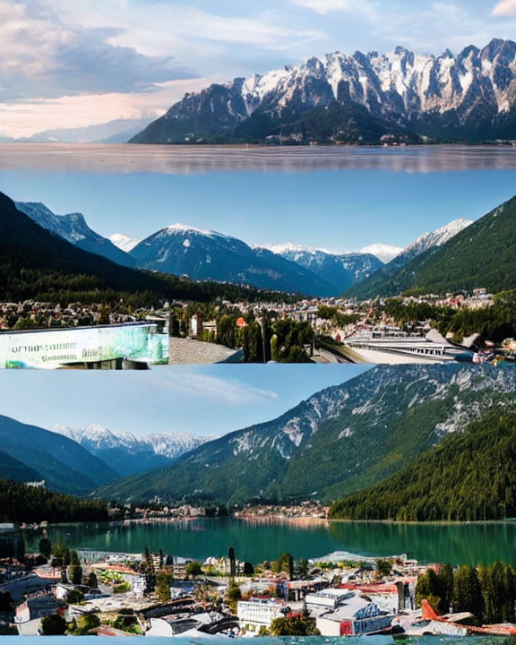
A contemporary alpine civic identity for Innsbruck, Austria. Not a classical coat of arms; instead a modern brand mark, abstract symbol, premium logo design, inspired by mountain city life, river crossing, and urban-alpine energy, no medieval ornament, no lions, no towers, no scrollwork, no text, no watermark. Style direction: abstract mountain geometry, faceted peaks, sleek alpine forms, poster-like composition, modern outdoor brand aesthetic.
Monoline Icon
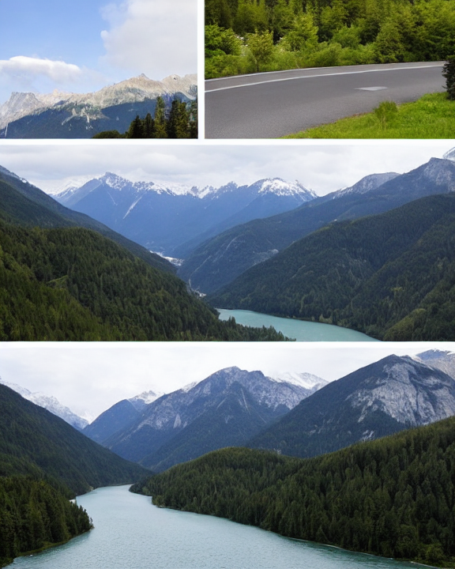
A contemporary alpine civic identity for Innsbruck, Austria. Not a classical coat of arms; instead a modern brand mark, abstract symbol, premium logo design, inspired by mountain city life, river crossing, and urban-alpine energy, no medieval ornament, no lions, no towers, no scrollwork, no text, no watermark. Style direction: single-line icon, elegant continuous stroke, minimal contour drawing, logo-ready, contemporary and refined.
Paper Cut
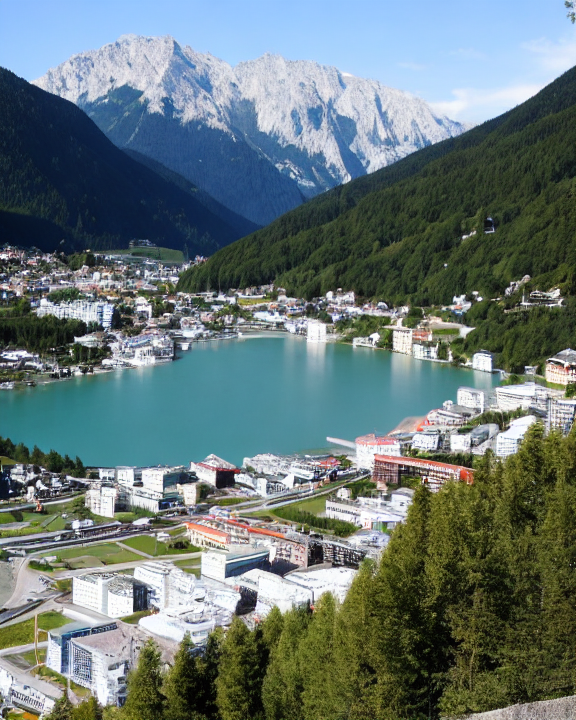
A contemporary alpine civic identity for Innsbruck, Austria. Not a classical coat of arms; instead a modern brand mark, abstract symbol, premium logo design, inspired by mountain city life, river crossing, and urban-alpine energy, no medieval ornament, no lions, no towers, no scrollwork, no text, no watermark. Style direction: paper-cut poster, layered flat shapes, torn edges, tactile editorial design, abstract civic badge.
Ink Stamp
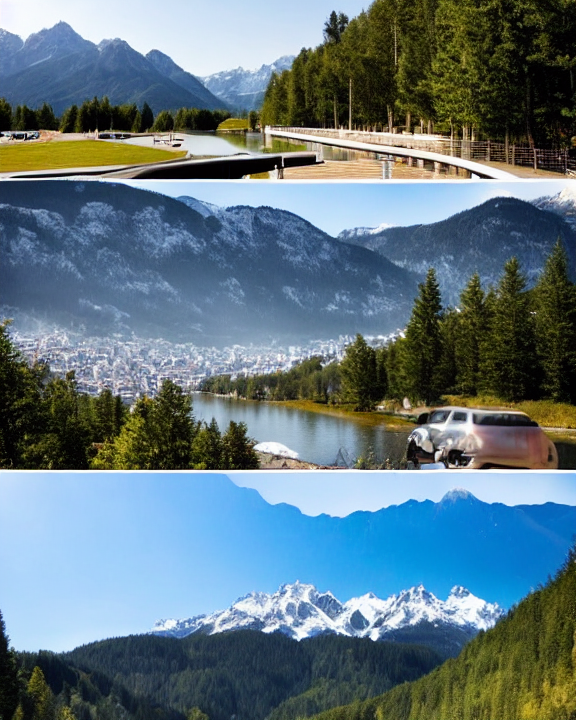
A contemporary alpine civic identity for Innsbruck, Austria. Not a classical coat of arms; instead a modern brand mark, abstract symbol, premium logo design, inspired by mountain city life, river crossing, and urban-alpine energy, no medieval ornament, no lions, no towers, no scrollwork, no text, no watermark. Style direction: monochrome ink-stamp symbol, worn paper texture, simple authoritative mark, minimal and bold.
Negative Space
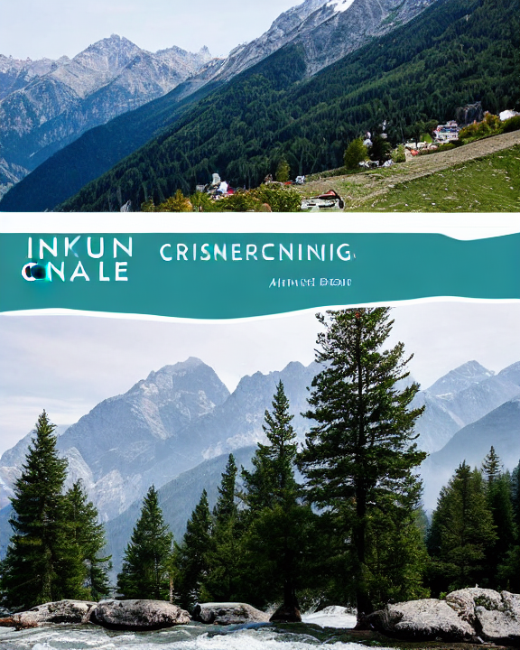
A contemporary alpine civic identity for Innsbruck, Austria. Not a classical coat of arms; instead a modern brand mark, abstract symbol, premium logo design, inspired by mountain city life, river crossing, and urban-alpine energy, no medieval ornament, no lions, no towers, no scrollwork, no text, no watermark. Style direction: negative-space emblem, hollow center, bold outer silhouette, smart contemporary branding, pure shape language.
Kitzbühel
Ultra Minimal
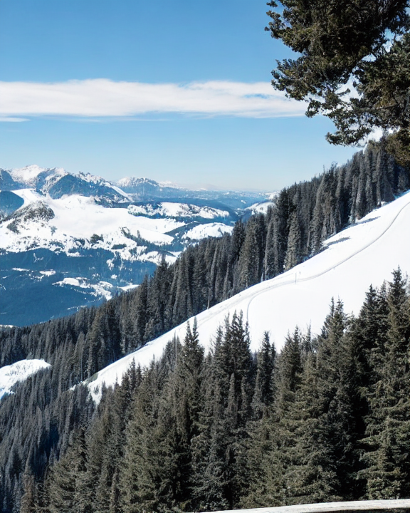
A contemporary alpine civic identity for Kitzbühel, Austria. Not a classical coat of arms; instead a modern brand mark, abstract symbol, premium logo design, inspired by alpine town elegance, ski culture, mountain geometry, and outdoor lifestyle, no medieval ornament, no lions, no towers, no scrollwork, no text, no watermark. Style direction: ultra-minimal flat logo, strong geometry, two-tone palette, generous negative space, Swiss-style precision, crisp and distinctive.
Abstract Mountain
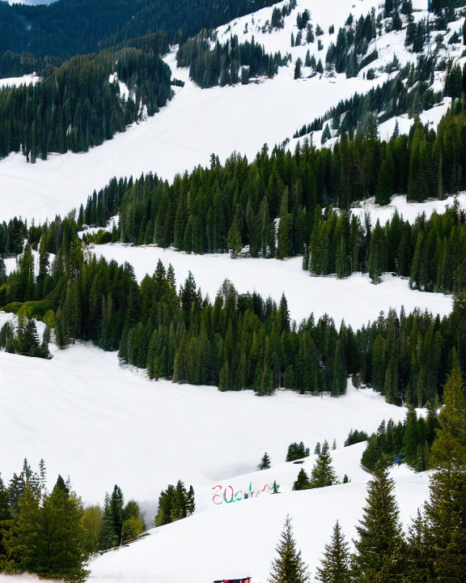
A contemporary alpine civic identity for Kitzbühel, Austria. Not a classical coat of arms; instead a modern brand mark, abstract symbol, premium logo design, inspired by alpine town elegance, ski culture, mountain geometry, and outdoor lifestyle, no medieval ornament, no lions, no towers, no scrollwork, no text, no watermark. Style direction: abstract mountain geometry, faceted peaks, sleek alpine forms, poster-like composition, modern outdoor brand aesthetic.
Monoline Icon
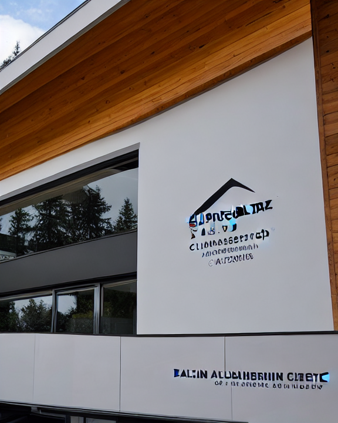
A contemporary alpine civic identity for Kitzbühel, Austria. Not a classical coat of arms; instead a modern brand mark, abstract symbol, premium logo design, inspired by alpine town elegance, ski culture, mountain geometry, and outdoor lifestyle, no medieval ornament, no lions, no towers, no scrollwork, no text, no watermark. Style direction: single-line icon, elegant continuous stroke, minimal contour drawing, logo-ready, contemporary and refined.
Paper Cut
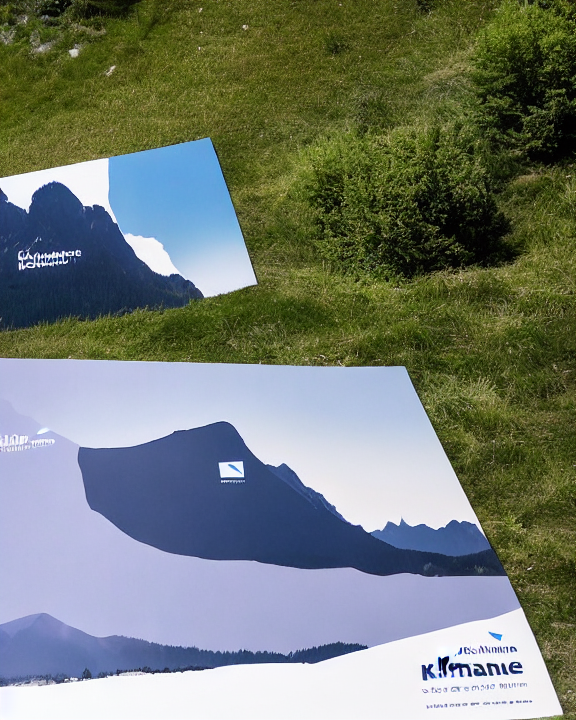
A contemporary alpine civic identity for Kitzbühel, Austria. Not a classical coat of arms; instead a modern brand mark, abstract symbol, premium logo design, inspired by alpine town elegance, ski culture, mountain geometry, and outdoor lifestyle, no medieval ornament, no lions, no towers, no scrollwork, no text, no watermark. Style direction: paper-cut poster, layered flat shapes, torn edges, tactile editorial design, abstract civic badge.
Ink Stamp
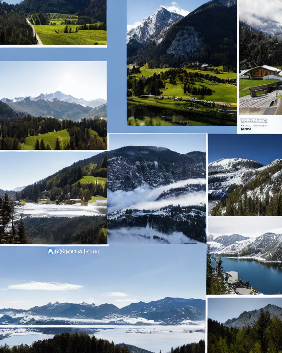
A contemporary alpine civic identity for Kitzbühel, Austria. Not a classical coat of arms; instead a modern brand mark, abstract symbol, premium logo design, inspired by alpine town elegance, ski culture, mountain geometry, and outdoor lifestyle, no medieval ornament, no lions, no towers, no scrollwork, no text, no watermark. Style direction: monochrome ink-stamp symbol, worn paper texture, simple authoritative mark, minimal and bold.
Negative Space
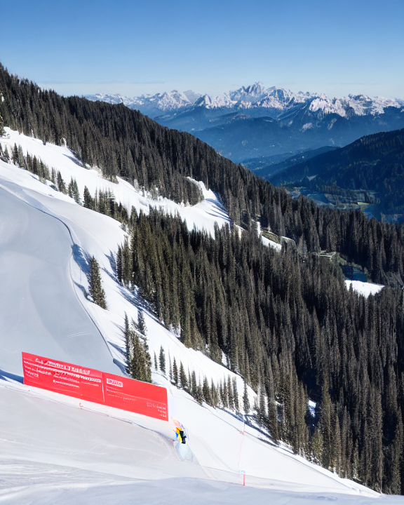
A contemporary alpine civic identity for Kitzbühel, Austria. Not a classical coat of arms; instead a modern brand mark, abstract symbol, premium logo design, inspired by alpine town elegance, ski culture, mountain geometry, and outdoor lifestyle, no medieval ornament, no lions, no towers, no scrollwork, no text, no watermark. Style direction: negative-space emblem, hollow center, bold outer silhouette, smart contemporary branding, pure shape language.